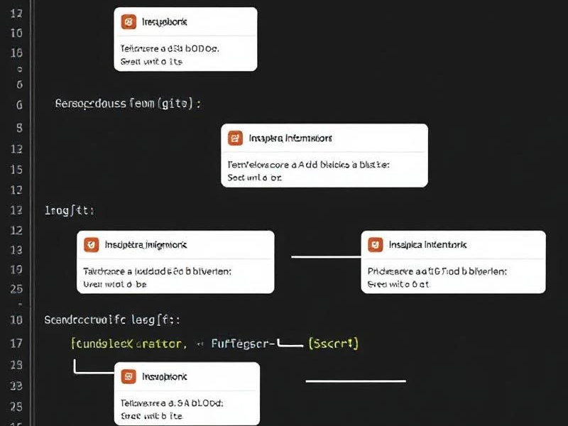

Purpose of README file
You can add a README file to a repository to communicate important information about your project.
A README, along with a repository license, citation file, contribution guidelines, and a code of conduct,
communicates expectations for your project and helps you manage contributions.
More about README
Purpose of Wireframe
In the early stages of design, wireframes are typically created to outline the fundamental structure,
layout, and functionality of the user interface without getting into the specifics of colors, graphics,
or detailed content. Wireframes are a simplified, visual representation of a digital interface, such as
a website, mobile app, or software application. They are a fundamental step in the design process that
serves as a blueprint or skeleton for the final product.
More about Wireframe

Branch in Github
Branches are independent lines of work, stemming from the original codebase. Developers create separate
branches for independently working on features so that changes from other developers don't interfere with
an individual's line of work. Developers can easily pull changes from different branches and also merge
their code with the main branch. This allows easier collaboration for developers working on one codebase.
More about Git Branch